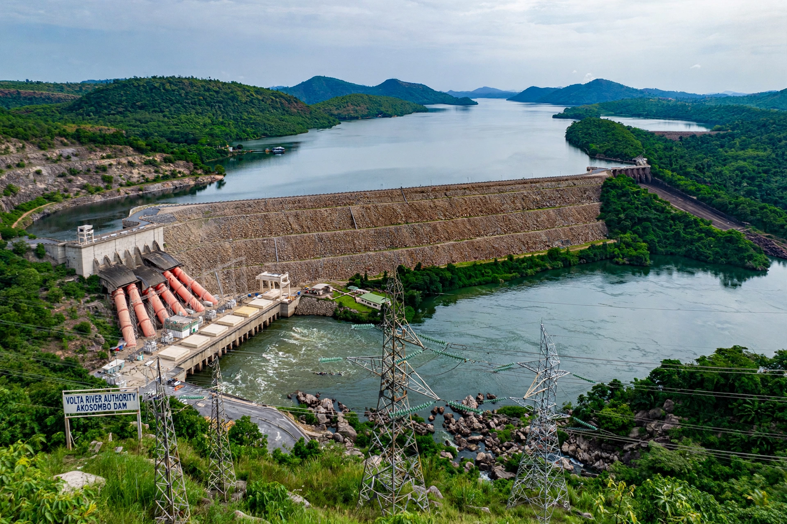

[Image placeholder: The Akosombo Dam across the Volta gorge]The **Akosombo Dam**, officially known as the Volta Dam, is a hydroelectric gravity dam on the Volta River in southeastern Ghana, at Akosombo in the Eastern Region. Completed in 1965, it created Lake Volta, one of the largest artificial lakes in the world, and its power station (about 1,020 MW after upgrades) long supplied the majority of Ghana's electricity and exports to Togo, Benin and Burkina Faso.
The dam was the centrepiece of Kwame Nkrumah's Volta River Project, financed by Ghana with the World Bank, the United States and the United Kingdom; its power was built largely to supply the VALCO aluminium smelter at Tema, owned by Kaiser Aluminum. A second dam downstream at Kpong followed in 1981. Drought-driven low water levels at Akosombo caused severe national power crises in 1983–84, 1998 and 2006–07.
Building the 660 m rock-fill dam flooded 8,500 km² and displaced some 80,000 people, whose resettlement towns remain around the lake. Fisheries on the lake became a major food source, while the blocked Volta ended the river's natural flood cycle below the dam.